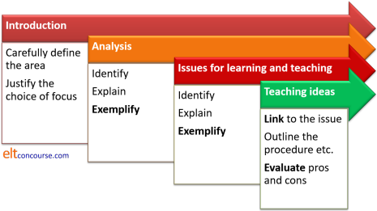

Help! I've been referred in Delta Module Two
First off, you are not alone. Over 15% of people are referred in Module Two.
Second, you should know that your chances of passing a re-take assignment for Module Two are good because:
- You know the system. You have now submitted four complete Language Skills / Systems assignments and there are no nasty surprises.
- You have had the experience of having an External Assessor in your classroom and marking your written work. This will make you more relaxed and able to perform at your best next time.
- You have completed a course and know where your own strengths and weaknesses lie.
In fact, you are in a better position now to be successful than
you were the first time around. So, try again.
Look at the positives.
 |
Where next? |
The first thing to do is look carefully at the regulations. Good centres provide advice, help and support for referred candidates but some centres don't. Either way, you need to know now what's required of you and what the systems are. Here's the breakdown:
- Eligibility
You are entitled to re-take twice, making three attempts in all. This is providing:- your portfolio of internal assignments is complete
- you have at least a Pass grade in both parts of a Language Systems or Skills assignment
- you have completed (but not necessarily passed) the Professional Development Assignment
- Time limits
You must re-take within a one-year period following the issue of results.
For example, if you are referred in June, you can try again in any two of the October and December sessions in the same year, and/or the June session in the following year. If you are referred in December, you can try again in any two of the June, October or December sessions of the following year. - Referral assignment topic
There are some things to consider:- Unless Cambridge have specifically told you otherwise, you need to choose the same focus (skills or systems) that you chose for the externally assessed assignment.
- You are allowed to choose the same skill or the same
systems area so, for example, if your first externally
assessed assignment was on listening for gist to follow a
lecture, your referral assignment could be on listening for
detailed information. To be safe, it is probably best
to choose another receptive skill but you need to be careful to ensure
that it is very different from the skill you focused on in
the internal course work.
Equally, if your systems focus was on a tense area, you could choose an area of lexis, multi-word verbs, modality, subordination and a host of other topics. What you should not do is select another tense area as the focus.
The advice in both cases is to ensure that you don't find yourself repeating anything so choose an obviously different topic. - You cannot use an internal assignment for the referral assessment and you must be very careful that what you submit differs completely from anything you have done internally.
- You cannot teach the same lesson or one very similar to it but you are allowed to use the same class or one at the same level.
- You cannot just rewrite your essay. What you submit must be wholly new although you may refer to the same sources.
If you do not comply with the first two criteria, you cannot
re-take Module Two but you can enter a wholly new course and try
again.
If you try to cheat the system by submitting a re-vamped version of
a previous essay or by teaching what is effectively the same lesson
as one you have already taught on the course, you will probably be
found out. That is not a good outcome.
 |
Get a report from Cambridge |
You need to do this through the centre where you entered for Module Two. You cannot apply directly. You will have to pay for the report, naturally, but in relation to the amount you have already spent on doing a course, it is not a significant amount of money.
If you do not get a report, you are in the dark and guessing what went wrong and where you need to improve. That is not a good place to be.
The report you receive will be based very closely on the one the
External Assessor sent to Cambridge and will address every criterion
on the Delta5a form.
It will show you which criteria were Met, Not met or Partially met
and will summarise the important strengths and weaknesses of the
essay, your planning, teaching and post-lesson reflection and
evaluation.
You will not, however, get any of your paperwork
returned to you with inserted comments and so on as you got
(presumably) from your tutors on your course. You will need,
therefore, to have your original papers in front of you when you
read the report.
There are three possible overall outcomes:
- You have failed both parts of the assessment: the essay and the plan, teaching and reflection and evaluation. If this is the case, you need to prepare for the referral assignment carefully, focusing on all parts of the assessment criteria.
- You have passed the essay but failed the planning, teaching and post-lesson reflection and evaluation. If this is the case, do not ignore any criteria which are marked Partially met or Not met for the essay but your focus will, obviously, be on the second section.
- You have failed the essay but passed the planning, teaching and post-lesson reflection and evaluation. If this is the case, do not ignore any criteria which are marked Partially met or Not met for the planning, teaching and the post-lesson reflection and evaluation but your focus will, obviously, be on the essay.
In the second and third cases, do not be complacent. It is
perfectly possible for you to reverse the grades and still fail a
referral assignment!
In a referral assignment, you need to pass both parts to be sure of
getting the qualification.
In what follows, the assumptions are:
- That you have the report from Cambridge on the external assessment in front of you.
- That you are now starting to plan the referral assignment with the intention of getting it right this time.
 |
The essay |
Before you do anything else, sit with your essay and the Cambridge report side by side. Each time you come across a criticism in the report with a criterion which is not fully met, make a note on your essay, highlighting the section if it helps, and identify why the assessor criticised it.
Now is a good time to remind yourself of the criteria and what they mean. There is no detailed gloss available from Cambridge English concerning the criteria for the assessment of the Background Essay so ELT Concourse has produced one. You can get it by clicking here.
| All the links on this page will open the guides in a new tab or window so you can switch between this page and the guide or just shut the guide to return. |
There are three guides on this site concerned with writing a good essay.
- How to write a background
essay
This guide is concerned with the nuts and bolts of writing an essay. It is mostly about referencing, style and essay structure (i.e., coherence).
If any of the following criteria are marked as Not or Partially Met, you need to look at this guide (again) carefully.- 1a)
If this is not fully met, it means that the essay is not written in language which is clear, accurate, easy to follow and is cohesive and clearly ordered. The report may tell you which of these things were weaknesses. Usually the criticism is that your essay contains too many slips and errors of grammar, spelling, punctuation of word choice. It may also be the case that the essay was not properly orderly and easily followed.
This is quite straightforward to fix. If the ordering and cohesiveness of the text is the problem, here's the diagram for how it should have been done:

Compare this with what you did.
If 1a) is not fully met for other reasons, make sure you proofread the next essay very carefully indeed. Make sure that subheadings are used intelligently to help the reader and that what follows them reflects their nature. - 1b)
This usually means that your use of terminology was faulty or that you failed to define or exemplify terms that you used. Again, this is quite easy to fix so check that you know what terms mean and that you define and/or exemplify any terms to show that you know what they mean. - 1c)
It is quite rare for this to be Not met but it is often Partially met in essays where you assert things without reference to authority or simply string together references without showing that you know what the citations mean. Read the bit in this guide about how to integrate citation into your text. - 1d)
If this is not fully met, you need to look again at this guide and check that the way you reference, both in the text and in the bibliography is conventional and consistent. - 1e)
The word limit is between 2000 and 2500 words. Make sure you keep close to the top end of this range and remember that words in tables, diagrams and so on count towards the total. - 2d)
If this criterion is not fully met, it means that some of what you have written is not relevant to the topic and you have failed to be coherent. If, for example, you limited yourself to a certain level or skill, it may mean that some of your exemplification, analysis or suggestions for teaching fell outside your scope. Don't let this happen again. - 2e) and/or 4c)
A failure to meet either or both of these criteria fully usually means that the final section (on suggestions for teaching solutions) does not link closely enough to your analysis and identification of teaching and learning problems. That's easy to fix if you number the issues and then refer explicitly to them in the section on suggestions for teaching.
- 1a)
- writing your first Delta
essay
This is the guide to writing the first essay which takes each section in turn and gives you some examples of what to include.
Compare the advice here to the essay you submitted and look for discrepancies. - getting a Distinction for an essay
This is the guide you need to read very carefully because it takes the criteria one by one and explains how to meet them above Pass level. As you read this guide, refer to the report you have from Cambridge and focus on the criteria which were criticised in that.
If 3a) or 3b) were not fully met for your essay, look again at either the guide to analysing skills or the guide to analysing systems.
If any of the criteria in section 4 are marked as Not or Partially met, the usual reasons are:- You have not explained your ideas in adequate detail to convince the reader that you are familiar with the classroom procedures and drawing on your experience. Remember that appendices are extra support and your suggestion should be understandable without referring to the appendix at all.
- You have not evaluated adequately saying what the suggestion targets, how well it works, why it works and whether there are any drawbacks.
- You have not linked the suggestions explicitly to the issues you identified earlier.
 |
The plan |
There are eleven criteria which apply to the plan and assessors
judge each one. Your report will show which ones were Met,
which Partially met and which Not met. With luck, the report
will also tell you why.
Obviously, now your focus should be on getting Met next to all
eleven criteria.
The guide to planning for a Delta
lesson is the place to go now. That guide takes the
criteria one by one and suggests reasons why you may not have fully
met any of them.
Sit down with your plan and the report and match the assessor's
comments against the advice in the guide.
In particular, look for:
- Aims that were either too challenging or not challenging enough.
- Analysis which was copied across from the essay or failed to analyse some of the lesson's content.
- Problems which are identified but not addressed with solutions.
- Procedures which do not contribute to the overall aims or which are not logically sequenced.
- Materials which contained errors or which did not do what you said they would do.
- Timing which was overambitious or too precise.
- A commentary which:
- describes rather than explains and justifies the lesson
- does not explain the overall structure of the lesson
- is not linked to the background reading and the essay
 |
Teaching |
The guides to meeting the teaching criteria on this site take each section individually and explain what the criteria mean and show how assessors often criticise teaching in each section.
Now, you need to look at the report from Cambridge and focus on any criteria which are marked as Not or Partially met in each section. Then use this menu to go to the areas of concern and plan how you will avoid similar criticisms this time around.
|
The last section, visualising the lesson, is something to do once you have planned the whole thing. You should do it in the hours before you teach the lesson for your referral assignment.
 |
Reflection and Evaluation |
It is a mistake to ignore this or allow it to get lost. A good reflection and evaluation document can make all the difference.
There are three criteria for the assessment of this part of the
assignment and the guide to writing a
good one takes each in turn and suggests how to avoid the most
frequent negative assessor comments.
Look again at what you wrote, read the assessor's comments and
compare both documents to the advice given in the guide.
After your referral lesson, repeat the exercise and write the document carefully to avoid the same criticisms occurring again.
| The Delta index |